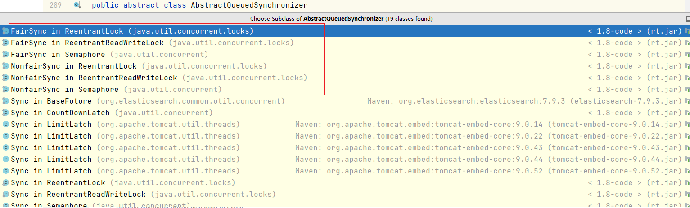
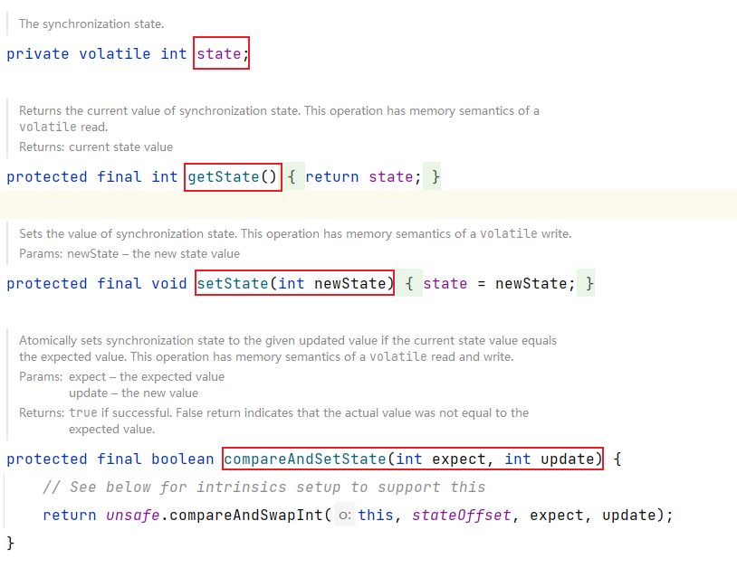
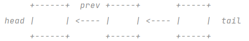
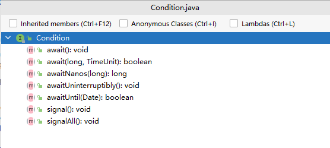

什么是AQS
全名AbstractQueuedSynchronizer(简称AQS)，AQS是一个抽象同步框架，可以用来实现依赖状态的同步器。是jdk1.5就有的，java.util.concurrent.locks包下的一个基础类。大部分同步器都是基于此类来实现的，围绕着共同的基础行为，包括等待队列、条件队列、独占获取、共享获取等。

AQS特性
- 阻塞等待队列
- 共享还是独占
- 公平还是非公平
- 是否支持可重入
- 是否允许中断
一个重要的属性
用来记录当前锁的同步状态

getState()
返回同步状态的当前值。此操作具有 {@code volatile} 读取的内存语义。 @return 当前状态值
setState(int newState)
设置同步状态的值。此操作具有 {@code volatile} 写入的内存语义。 @param newState 新的状态值
compareAndSetState(int expect, int update)
如果当前状态值等于预期值，则原子地将同步状态设置为给定的更新值。此操作具有 {@code volatile} 读写的内存语义。 @param 期望值 @param 更新新值 @return {@code true} 如果成功。假返回表示实际值不等于预期值。
两种资源共享方式
- Exclusive-独占，只有一个线程能执行，如
ReentrantLock - Share-共享，多个线程可以同时执行，如
Semaphore、CountDownLatch
两种队列
- 同步等待队列
- 条件等待队列
不同的自定义同步器竞争共享资源的方式也不同。自定义同步器在实现时只需要实现共享资源state的获取与释放方式即可，至于具体线程等待队列的维护（如获取资源失败入队/唤醒出队等），AQS已经在顶层实现好了。自定义同步器实现时主要实现以下几种方法：
isHeldExclusively()：该线程是否正在独占资源。只有用到condition才需要去实现它。tryAcquire(int)：独占方式。尝试获取资源，成功则返回true，失败则返回false。tryRelease(int)：独占方式。尝试释放资源，成功则返回true，失败则返回false。tryAcquireShared(int)：共享方式。尝试获取资源。负数表示失败；0表示成功，但没有剩余可用资源；正数表示成功，且有剩余资源。tryReleaseShared(int)：共享方式。尝试释放资源，如果释放后允许唤醒后续等待结点返回true，否则返回false。
同步等待队列
AQS当中的同步等待队列也称CLH队列，CLH队列是Craig、Landin、Hagersten三人发明的一种基于双向链表数据结构的队列，是FIFO先入先出线程等待队列，Java中的CLH队列是原CLH队列的一个变种,线程由原自旋机制改为阻塞机制。
AQS依赖CLH同步队列来完成同步状态的管理：
- 当前线程如果获取同步状态失败时，
AQS则会将当前线程已经等待状态等信息构造成一个节点（Node）并将其加入到CLH同步队列，同时会阻塞 - 当前线程当同步状态释放时，会把首节点唤醒（公平锁），使其再次尝试获取同步状态。
- 通过
signal或signalAll将条件队列中的节点转移到同步队列。（由条件队列转化为同步队列）
等待队列节点类。等待队列是“CLH”（Craig、Landin 和 Hagersten）锁定队列的变体。 CLH 锁通常用于自旋锁。我们改为将它们用于阻塞同步器，但使用相同的基本策略，即在其节点的前驱中保存有关线程的一些控制信息。每个节点中的“状态”字段跟踪线程是否应该阻塞。节点在其前任发布时收到信号。队列的每个节点都充当一个特定的通知式监视器，持有一个等待线程。尽管状态字段不控制线程是否被授予锁定等。一个线程可能会尝试获取它是否在队列中的第一个。但成为第一并不能保证成功；它只给予抗争的权利。所以当前发布的竞争者线程可能需要重新等待。要加入 CLH 锁，您可以原子地将其拼接为新的尾部。要出列，您只需设置 head 字段。

插入 CLH 队列只需要对“tail”进行一次原子操作，所以有一个简单的从未排队到排队的分界点。类似地，出列只涉及更新“头”。然而，节点需要做更多的工作来确定他们的继任者是谁，部分是为了处理由于超时和中断可能导致的取消。 “prev”链接（未在原始 CLH 锁中使用），主要用于处理取消。如果一个节点被取消，它的后继（通常）会重新链接到一个未取消的前驱。有关自旋锁情况下的类似机制的解释，请参阅 Scott 和 Scherer 的论文，网址为 http:www.cs.rochester.eduuscottsynchronization 我们还使用“next”链接来实现阻塞机制。每个节点的线程 id 保存在它自己的节点中，因此前驱通过遍历下一个链接来确定它是哪个线程来通知下一个节点唤醒。确定后继节点必须避免与新排队节点竞争以设置其前驱节点的“下一个”字段。当节点的后继节点似乎为空时，通过从原子更新的“尾部”向后检查，在必要时解决此问题。（或者，换种说法，下一个链接是一种优化，因此我们通常不需要向后扫描。）取消为基本算法引入了一些保守性。
由于我们必须轮询其他节点的取消，因此我们可能无法注意到被取消的节点是在我们前面还是在我们后面。这是通过在取消时总是解除后继者来处理的，允许他们在新的前任者上稳定下来，除非我们能确定一个未取消的前任者将承担这个责任。CLH队列需要一个虚拟头节点来启动。但是我们不会在构建时创建它们，因为如果从不存在争用，那将是浪费精力。
相反，在第一次争用时构造节点并设置头指针和尾指针。等待条件的线程使用相同的节点，但使用额外的链接。条件只需要链接简单（非并发)链接队列中的节点，因为它们仅在独占时才被访问。在等待时，一个节点被插入到条件队列中。根据信号，节点被转移到主队列。 status 字段的特殊值用于标记节点所在的队列。
条件等待队列
AQS中条件队列是使用单向列表保存的，用nextWaiter来连接:
- 调用await方法阻塞线程；
- 当前线程存在于同步队列的头结点，调用await方法进行阻塞（从同步队列转化到条件队列）
Condition接口

- 调用Condition#await方法会释放当前持有的锁，然后阻塞当前线程，同时向Condition队列尾部添加一个节点，所以调用Condition#await方法的时候必须持有锁。
- 调用Condition#signal方法会将Condition队列的首节点移动到阻塞队列尾部，然后唤醒因调用Condition#await方法而阻塞的线程(唤醒之后这个线程就可以去竞争锁了)，所以调用Condition#signal方法的时候必须持有锁，持有锁的线程唤醒被因调用Condition#await方法而阻塞的线程。
Condition将Object监视器方法（wait、notify和notifyAll）分解为不同的对象，通过将它们与任意Lock实现的使用相结合，产生每个对象具有多个等待集的效果。Lock代替了synchronized方法和语句的使用，而Condition代替了对象监视器方法的使用。
条件（也称为条件队列或条件变量）为一个线程提供了一种挂起执行（“等待”）的方法，直到另一个线程通知某个状态条件现在可能为真。因为对这个共享状态信息的访问发生在不同的线程中，它必须受到保护，所以某种形式的锁与条件相关联。等待条件提供的关键属性是它以原子方式释放关联的锁并挂起当前线程，就像Object.wait一样。
Condition实例本质上绑定到一个锁。要获取特定Lock实例的Condition实例，请使用其newCondition()方法
Condition实现可以提供与Object监视器方法不同的行为和语义，例如保证通知的顺序，或者在执行通知时不需要持有锁。 如果实现提供了这样的专门语义，那么实现必须记录这些语义。
请注意，Condition实例只是普通对象，它们本身可以用作synchronized语句中的目标，并且可以调用它们自己的监视器wait和notification方法。获取Condition实例的监视器锁，或使用其监视器方法，与获取与该Condition关联的Lock或其等待和信号方法的使用没有特定的关系。建议您不要以这种方式使用Condition实例以避免混淆，除非在它们自己的实现中。
除非另有说明，否则为任何参数传递null值都将导致抛出NullPointerException。
实施注意事项
在等待Condition，通常允许发生“虚假唤醒”，作为对底层平台语义的让步。这对大多数应用程序几乎没有实际影响，因为应始终在循环中等待Condition，以测试正在等待的状态谓词。实现可以自由地消除虚假唤醒的可能性，但建议应用程序程序员始终假设它们可能发生，因此始终在循环中等待。
三种形式的条件等待（可中断、不可中断和定时）在某些平台上的实现难易程度和性能特征方面可能有所不同。特别是，可能很难提供这些功能并维护特定的语义，例如排序保证。此外，在所有平台上实现中断线程实际挂起的能力并不总是可行的。
因此，实现不需要为所有三种等待形式定义完全相同的保证或语义，也不需要支持线程实际挂起的中断。
一个实现需要清楚地记录每个等待方法提供的语义和保证，当一个实现确实支持线程挂起的中断时，它必须遵守这个接口中定义的中断语义。
由于中断通常意味着取消，并且中断检查通常很少，因此实现可以倾向于响应中断而不是正常的方法返回。即使可以证明中断发生在另一个可能已解除线程阻塞的操作之后也是如此。实现应记录此行为

...
...
Copyright 2021 sunfy.top ALL Rights Reserved